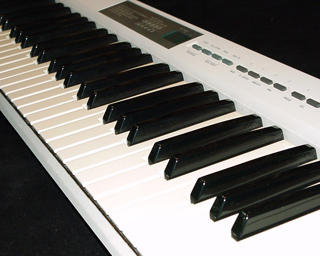

|
||
初心者の方にも使いやすい |
||

ピアノを弾けませんでした。 でも実際には、その歌に出てくるコード(押さえる音)を覚えるだけで弾き語りが出来たりします。ギターのように手の形を覚えるイメージで・・・ 考えてみれば、私たち日本人は特別な教育を選択しない限りピアノに触れる事は少なかったように思います。(それに住宅事情も・・・) 本当はこんなに簡単に楽しめる楽器なのに・・・ このアプリは片手で押さえられるように音を選択してあります。 好きな歌を歌本を見て、そこに書いて有るコードをメモし、その歌を口ずさみながら練習すると、楽しく上達していくのではないでしょうか。 メモしたコードは簡単にキーを変更できます。 また、ヘッドホンで聴くとよくわかりますが、P-Chord自体で弾き語りが出来るように、音源には結構リアルな音を入れています。 上級者の方からはコード進行をメモし作曲のイメージ作りに役立てているとメッセージを頂いています。 このアプリでピアノをもっと身近に・・・ 是非あなたのiPhone・iPad・iPod-touchで可愛がってやって下さい。 |
|
十分テストは行ったつもりですが、何か不具合が見つかりましたらキャプチャー画像と共に詳しい情報を送って下さい。 ご連絡頂きました不具合につきましては修正が完了するまでこのページでお知らせします。 どうぞ宜しくお願い致します。 ASoft |
 |
TOP > iOS MENU > P-Chord